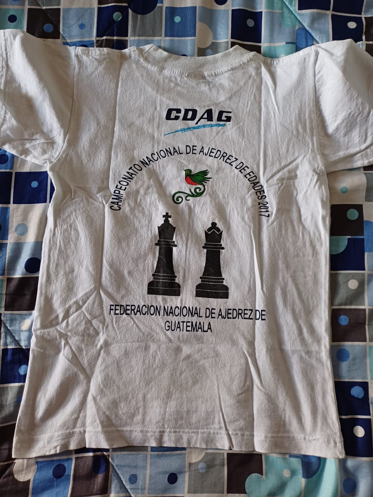
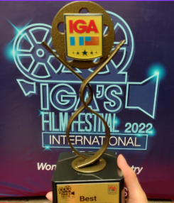

IGA Film Festival
Premio a mejor director en concurso de cortometrajes junto a mis compañeros
3 Expos
Security Keys • Sistema web para cines • Página para empresa de autoservicios
Pasantía
Primera experiencia laboral con excelente aceptación y posibilidad de contrato
En mi último año de Básicos gané un premio grupal al participar con mis compañeros de colegio en un concurso de cortometrajes de IGA, ganando todos los premios ese año y yo llevándome el premio a mejor director. Participé durante mi carrera en las 3 Expos donde hacemos proyectos en base a nuestra carrera, es una exposición donde todos en el colegio participamos y está abierta al público, realicé un proyecto de un sistema de seguridad que abre puertas o cerraduras, realicé un sistema web para cines y una página para una empresa de autoservicios. En lo laboral pues comencé hace poco pero tuve la dicha de tener la oportunidad de participar en donde hice prácticas de hacer una pasantía y pues me va bien, he tenido buena aceptación y espero pronto tener la oportunidad de entrar a trabajar con un contrato normal.


.png)